콘크리트산업기사 (2015-08-16 기출문제)
1과목: 콘크리트재료 및 배합
1. 풍화된 시멘트를 사용하면 시멘트 경화체의 강도 및 품질이 저하하게 되는데 시멘트의 풍화에 미치는 요인으로 틀린 것은?
- 대기중 수분, 이산화탄소
- 시멘트의 분말도
- 석고 및 MgO 성분
- 소성이 불충분한 시멘트 클링커
(정답률: 76%)

2. 압축강도 시험의 기록이 없는 현장에서 설계기준강도 (fck)가 50MPa인 콘크리트의 배합강도(fcr)로 옳은 것은?
- 55.5MPa
- 57MPa
- 58.5MPa
- 60MPa
(정답률: 60%)
3. 단위수량 162kg, 물-시멘트비 55%, 슬럼프 80mm, 공기량 5% 및 잔골재율 45%의 조건으로 콘크리트의 배합 설계를 실시할 때 단위시멘트량(A) 및 단위굵은골재량(B)은 얼마인가? (단, 시멘트의 밀도 : 3.14g/cm3, 잔골재의 표건 밀도 : 2.64g/cm3, 굵은골재의 표건 밀도 : 2.66g/cm3)
- A=295kg, B=1,015kg
- A=295kg, B=824kg
- A=3⑤kg, B=1,015kg
- A=3⑤kg, B=824kg
(정답률: 32%)
4. 배합설계에서 잔골재의 절대용적이 320L, 굵은골재의 절대용적이 560L일 때, 잔골재율은 얼마인가?
- 36.4%
- 42.5%
- 57.1%
- 63.6%
(정답률: 67%)
5. 아래 표는 굵은골재의 체가름 시험결과 이다. 이 굵은 골재의 최대치수와 조립률은?
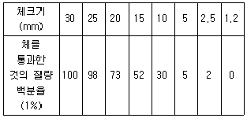
- 최대치수 : 30mm, 조립률 : 6.90
- 최대치수 : 25mm, 조립률 : 6.90
- 최대치수 : 30mm, 조립률 : 7.40
- 최대치수 : 25mm, 조립률 : 7.40
(정답률: 69%)
6. 콘크리트 공시체 7개에 대한 압축강도를 실험한 데이터가 다음과 같을 때 불편분산에 의한 표준편차는?
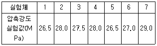
- 0.774MPa
- 0.812MPa
- 0.913MPa
- 0.985MPa
(정답률: 56%)
7. 골재의 입형에 대한 설명 중 옳지 않은 것은?
- 실적률이 작으면 시멘트페이스트량이 증가되어 비경제적인 콘크리트가 된다.
- 부순자갈은 입형이 나쁘기 때문에 콘크리트 강도면에서 상당히 불리하다.
- 골재의 실적률이 증가하면 콘크리트의 유동성도 증가한다.
- 골재의 입형이 나쁘면 작업성을 좋게 하기 위하여 단위 수량 및 시멘트량이 증가된다.
(정답률: 58%)
8. 시멘트의 강도시험(KS L ISO 679)에서 규정하고 있는 시멘트 모르타르 압축강도 시험에 사용되는 공시체에 대한 설명으로 옳은 것은?
- 부피로 시멘트 1에 대해서 물/시멘트 비 0.5 및 잔골재 2.7의 비율로 모르타르를 성형한다.
- 부피로 시멘트 1에 대해서 물/시멘트 비 0.4 및 잔골재 3의 비율로 모르타르를 성형한다.
- 질량으로 시멘트 1에 대해서 물/시멘트 비 0.4 및 잔골재 2.7의 비율로 모르타르를 성형한다.
- 질량으로 시멘트 1에 대해서 물/시멘트 비 0.5 및 잔골재 3의 비율로 모르타르를 성형한다.
(정답률: 70%)
9. 잔골재의 유기불순물 시험(KS F 2510)의 목적으로 적당하지 않은 것은?
- 잔골재 중의 유기불순물은 콘크리트의 경화를 방해하고 콘크리트의 강도, 내구성, 안정성을 해친다.
- 잔골재 중에 함유되어 있는 유기불순물의 양을 알아 그 모래의 사용 적부를 개략적으로 판단하는데 필요하다.
- 모래에 보통 부식된 형태로 유기물이 들어있으며, 육안으로 분별하기가 곤란하다.
- 유기물은 콘크리트의 배합설계 시 잔골재율을 조정하기 위하여 필요하다.
(정답률: 58%)
10. 최대 치수가 25mm인 굵은 골재로 체가름시험을 실시하려고 한다. 이 때 필요한 시료의 최소 건조 질량으로 옳은 것은?
- 500g
- 1kg
- 2.5kg
- 5kg
(정답률: 62%)
11. 다음 혼화재중 잠재수경성인 것은?
- 고로슬래그
- 실리카 퓸
- 플라이애시
- 왕겨재
(정답률: 64%)
12. KS L 5201에 규정되어 있는 포틀랜드시멘트에 속하지 않는 것은?
- 중용열 포틀랜드시멘트
- 저열 포틀랜드시멘트
- 포틀랜드 포졸란시멘트
- 조강 포틀랜드시멘트
(정답률: 70%)
13. 콘크리트 배합설계의 기본 원칙에 대한 설명으로 틀린 것은?
- 적당한 강도와 내구성을 확보할 것
- 가능한 단위 수량을 적게 할 것
- 경제성을 고려 할 것
- 굵은골재 최대 치수가 작은 것을 사용 할 것
(정답률: 83%)
14. 셀룰로오스계와 아크릴계 두 종류의 재료가 사용되며, 수중에서의 시멘트와 골재의 분리를 막아 수중공사를 용이하게 하는 혼화제는?
- 촉진제
- 급결제
- 수중불분리성혼화제
- 지연제
(정답률: 88%)
15. 다음 중 AE 감수제의 사용으로 얻을 수 있는 효과가 아닌 것은?
- 단위수량을 감소시킨다.
- 동결융해에 대한 저항성이 증대된다.
- 투수성이 향상된다.
- 수밀성이 향상된다.
(정답률: 61%)
16. 그라우팅용 혼화제의 특징으로 적절하지 않은 것은?
- 블리딩을 적게 한다.
- 그라우트를 수축시킨다.
- 재료분리가 적어야 한다.
- 주입하기 용이하여야 한다.
(정답률: 81%)
17. 시방배합결과 단위수량 185kg/m3, 단위잔골재량 750kg/m3, 단위굵은골재량 975kg/m3을 얻었다. 잔골재의 표면수율이 3%, 굵은골재의 표면수율이 2%라면 이를 보정하여 현장배합으로 바꾼 단위수량은?
- 143kg/m3
- 157kg/m3
- 182kg/m3
- 227kg/m3
(정답률: 31%)
18. 시멘트 비중시험(KS L 5110)의 정밀도 및 편차에 대한 아래 표의 내용에서 ( )안에 알맞은 수치는?
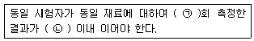
- ㉠ : 2, ㉡ : ±0.02
- ㉠ : 2, ㉡ : ±0.03
- ㉠ : 3, ㉡ : ±0.03
- ㉠ : 3, ㉡ : ±0.02
(정답률: 59%)
19. 아래의 표와 같은 원리를 이용하여 측정하는 시멘트관련 시험은?
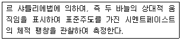
- 시멘트의 안정도 시험
- 시멘트의 비중시험
- 시멘트의 응결시험
- 시멘트의 분말도 시험
(정답률: 55%)
20. 콘크리트용 굵은 골재의 유해물 함유량의 한도 중 연한 석편의 최대값(질량백분율)은?
- 0.25%
- 0.5%
- 1%
- 5%
(정답률: 36%)
2과목: 콘크리트제조, 시험 및 품질관리
21. 관입 저항침에 의한 콘크리트의 응결시간 시험(KS F 2436)에서 초결시간에 대한 설명으로 옳은 것은?
- 관입 저항이 1.25MPa이 될 때의 시간을 초결시간으로 결정한다.
- 초입 저항이 3.5MPa이 될 때의 시간을 초결시간으로 결정한다.
- 관입 저항이 7MPa이 될 때의 시간을 초결시간으로 결정한다.
- 관입 저항이 28MPa이 될 때의 시간을 초결시간으로 결정한다.
(정답률: 76%)
22. 콘크리트의 워커빌리티 측정방법 중 아래의 표에서 설명하는 방법은?
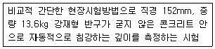
- 리몰딩 시험
- 플로우 시험
- VB 시험
- 볼관입 시험
(정답률: 77%)
23. 관리도의 가장 기본이 되는 것으로써 평균치와 데이터 변화를 관리할 수 있고 콘크리트의 압축강도, 슬럼프 공기량 등의 특성을 관리하는 데에 편리한 관리도의 명칭은?
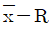
관리도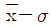
관리도- x 관리도
- P 관리도
(정답률: 62%)
24. 레디믹스트 콘크리트의 염화물 함유량(염소이온(Cl)량)은 구입자의 승인을 얻은 경우에는 최대 몇 kg/m3이하로 할 수 있는가?
- 0.1kg/m3
- 0.2kg/m3
- 0.3kg/m3
- 0.6kg/m3
(정답률: 56%)
25. 콘크리트의 응결 후에 발생하는 콘크리트의 균열의 종류가 아닌 것은?
- 건조수축균열
- 온도균열
- 하중에 의한 휨균열
- 소성수축균열
(정답률: 69%)
26. 콘크리트의 워커빌리티에 관한 설명 중 옳지 않은 것은?
- 시멘트량이 많을수록 콘크리트는 워커블하게 된다.
- 온도가 높을수록 슬럼프는 증가되고, 수송에 의한 슬럼프 감소는 줄어든다.
- 플라이애쉬를 사용하면 워커빌리티가 개선된다.
- 둥근 모양의 천연 모래가 모가진 것이나 편평한 것이 많은 부순 모래에 비하여 워커블한 콘크리트를 얻기 쉽다.
(정답률: 64%)
27. 건설된 콘크리트 구조물의 콘크리트 강도를 추정하는 방법으로 아래의 표에서 것은?
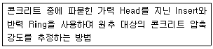
- 코어 강도시험법
- 반발경도법
- 초음파 속도법
- 인발법
(정답률: 58%)
28. 슬럼프가 25mm인 레디믹스트 콘크리트의 슬럼프 허용오차로 옳은 것은?
- ±5mm
- ±10mm
- ±15mm
- ±20mm
(정답률: 58%)
29. 레디믹스트 콘크리트에 사용하는 천연 골재(잔골재)는 염분(NaCl)의 한도가 몇% 이하이어야 하는가? (단, 주문자의 승인을 얻지 않은 경우)
- 0.04%
- 0.06%
- 0.08%
- 0.1%
(정답률: 60%)
30. 통계적 품질관리 방법이 아닌 것은?
- 관리도법
- 발취검사법
- 표본조사
- 현장검사
(정답률: 75%)
31. 일반적으로 콘크리트는 강 알칼리성 재료로써 철근의 부식을 억제하는데, 콘크리트의 알칼리 정도의 범위로 알맞은 것은?
- pH 12~13
- pH 9~10
- pH 7~8
- pH 5~6
(정답률: 78%)
32. 굳지 않은 콘크리트의 공기량에 대한 설명으로 틀린 것은?
- 일반적인 사용범위 내에서 AE제의 사용량이 증가하면 공기량도 증가한다.
- 콘크리트의 온도가 낮을수록 공기량은 증가한다.
- 진동다짐을 실시하면 공기량은 증가한다.
- 잔골재량이 많을수록 공기량은 증가한다.
(정답률: 39%)
33. 콘크리트의 쪼갬 인장강도 시험에서 직경 150mm, 길이 300mm인 원주형 공시체를 사용한 경우 최대하중이 200kN이었다면, 인장강도는?
- 2.8MPa
- 3.1MPa
- 3.8MPa
- 4.1MPa
(정답률: 68%)
34. 콘크리트의 압축강도 시험을 위한 공시체 제작에 관한 설명 중 옳지 않은 것은?
- 몰드에 채울 때 콘크리트는 2층 이상의 거의 같은 층으로 나눠서 채운다.
- 공시체의 양생 온도는 (20±2)℃로 한다.
- 공시체의 지름은 굵은 골재 최대치수의 3배 이하이어야 한다.
- 몰드를 떼는 시기는 콘크리트 채우기가 끝나고 나서 16시간 3일 이내로 한다.
(정답률: 38%)
35. 1개마다 양, 불량으로 구별할 경우 사용하나 불량률을 계산하지 않고 불량 개수에 의해서 관리하는 경우에 사용하는 관리도는?
- U 관리도
- C 관리도
- P 관리도
- Pn 관리도
(정답률: 55%)
36. 압축강도 시험결과가 아래의 표와 같을 때 표준 편차를 구하면? (단, 불편분산의 개념에 의한다.)
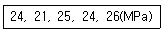
- 1.87MPa
- 1.96MPa
- 2.13MPa
- 2.31MPa
(정답률: 52%)
37. 레디믹스트 콘크리트의 운반차로서 덤프트럭에 대한 설명으로 틀린 것은?
- 덤프트럭의 적재함 바닥은 평활하고 방수가 되어야 한다.
- 덤프트럭의 적재함은 필요에 따라 비바람 등에 대한 보호를 위해 방수 덮개를 갖춘 것으로 한다.
- 포장 콘크리트 중 슬럼프 65mm의 콘크리트를 운반하는 경우에 한하여 사용할 수 있다.
- 콘크리트 표면의 1/3과 2/3인 부분에서 각각 시료를 채취하여 슬럼프 시험을 하였을 경우 그 양쪽의 슬럼프 차가 20mm 이내가 되어야 한다.
(정답률: 48%)
38. 콘크리트의 응결이 지연되는 경우에 대한 설명으로 틀린 것은?
- 지연형의 AE감수제 증가
- 플라이 애쉬 증가
- 시멘트의 분말도 증가
- 슬럼프 증가
(정답률: 62%)
39. 콘크리트 재료로서 플라이애시를 사용할 때 1회 계량분에 대한 계량 허용오차로 옳은 것은?
- ±1%
- ±2%
- ±3%
- ±4%
(정답률: 58%)
40. 보통 골재를 사용한 콘크리트의 단위 용적질량으로서 가장 적당한 것은?
- 1.8t/m3
- 2.3t/m3
- 2.9t/m3
- 3.3t/m3
(정답률: 58%)
3과목: 콘크리트의 시공
41. 포장용 콘크리트의 배합기준 중 설계기준 휨강도(f28)는 얼마 이상이어야 하는가?
- 3.0MPa
- 3.5MPa
- 4.0MPa
- 4.5MPa
(정답률: 57%)
42. 콘크리트의 압축강도 시험을 통하여 거푸집을 해체하고자 한다. 설계기준 강도가 24MPa이고, 보의 밑면인 경우 거푸집을 해체할 때 콘크리트 압축강도는 얼마 이상이어야 하는가?
- 5MPa 이상
- 8MPa 이상
- 12MPa 이상
- 16MPa 이상
(정답률: 64%)
43. 매스콘크리트에서 균열발생을 제한할 경우에 적용하는 온도균열지수의 범위는? (단, 철근이 배치된 일반적인 구조물의 경우)
- 1.5 이상
- 1.2~1.5
- 1.0~1.2
- 0.7~1.0
(정답률: 65%)
44. 경사슈트에 대한 아래 표의 설명에서 ( )에 알맞은 것은?
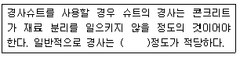
- 수평 2에 대하여 연직1
- 수평 1에 대하여 연직1
- 수평 1에 대하여 연직2
- 수평 1에 대하여 연직3
(정답률: 66%)
45. 콘크리트 제품을 제조할 때, 고온 고압 용기에 제품을 넣고 180°C 전후, 공기압 7~15기압으로 고온고압 처리하는 양생방법은?
- 오토클레이브양생
- 상압증기양생
- 피막양생
- 전기양생
(정답률: 70%)
46. 수밀콘크리트의 배합에 대한 설명으로 틀린 것은?
- 콘크리트의 소요의 품질이 얻어지는 범위 내에서 단위수량은 되도록 적게 한다.
- 콘크리트의 소요의 품질이 얻어지는 범위 내에서 물-결합재비는 되도록 적게 한다.
- 콘크리트의 소요의 품질이 얻어지는 범위 내에서 단위 굵은 골재량은 되도록 적게 한다.
- 물-결합재비는 50% 이하를 표준으로 한다.
(정답률: 60%)
47. 매스콘크리트에 관한 다음의 설명 중 틀린 것은?
- 암반 위에 매스콘크리트를 타설하면 외부구속에 의한 온도균열이 발생할 가능성이 있다.
- 온도균열의 발생은 콘크리트의 인장강도와 온도응력에 의해서 평가할 수 있다.
- 시공계획에 있어서 온도균열지수가 되도록 작게 하는 재료, 배합 및 시공법을 채용하는 것으로 한다.
- 굵은 골재의 최대치수를 크게 하고 단위 수량을 저감시키는 것은 온도균열대책으로서 유효하다.
(정답률: 40%)
48. 콘크리트의 운반 및 타설에 대한 설명으로 적합하지 않은 것은?
- 콘크리트의 재료분리가 될 수 있는 대로 적게 일어나도록 해야 한다.
- 넓은 장소에서는 일반적으로 콘크리트의 공급원으로부터 먼 쪽에서 타설하여 가까운 쪽으로 끝내도록 하는 것이 좋다.
- 사전에 충분한 운반계획을 세우고, 신속하게 운반하여 즉시 타설한다.
- 비비기에서 타설이 끝날 때까지의 시간은 외기온도 25°C 이상일 때는 2시간 이내로 하여야 한다.
(정답률: 78%)
49. 팽창콘크리트에 대한 설명으로 틀린 것은?
- 팽창콘크리트의 강도는 일반적으로 재령 28일의 압축강도를 기준으로 한다.
- 포대 팽창재는 지상 0.3m 이상의 마루 위에 쌓아 운반이나 검사에 편리하도록 배치하여 저장하여야 한다.
- 포대 팽창재는 12포대 이하로 쌓아야 한다.
- 콘크리트의 팽창률은 일반적으로 재령 28일에 대한 시험치를 기준으로 한다.
(정답률: 50%)
50. 콘크리트는 타설한 후 습윤상태로 노출면이 마르지 않도록 하여야 하며, 수분의 증발에 따라 살수를 하여 습윤 상태로 보호하여야 한다. 일평균 기온이 10°C 이상~15°C 미만이고, 보통포틀랜드시멘트를 사용한 경우 습윤양생기간의 표준으로 옳은 것은?
- 3일
- 5일
- 7일
- 9일
(정답률: 68%)
51. 숏크리트의 시공에 대한 설명으로 틀린 것은?
- 절취면이 비교적 평활하고 넓은 법면에 대해서는 세로방향으로 적당한 간격으로 실축줄눈을 설치하여 한다.
- 뿜어 붙은 콘크리트가 박리되거나 흘러내리지 않는 범위의 적당한 두께로 뿜어 붙여 소정의 두께가 될 때까지 반복해서 뿜어 붙여야 한다.
- 숏크리트는 빠르게 운반하고, 급결제를 첨가한 후는 바로 뿜어 붙이기 작업을 실시하여야 한다. 비탈면이 동결하였거나 빙설이 있는 경우 표면에 물을 뿌려 시공한다.
- 비탈면이 동결하였거나 빙설이 있는 경우 표면에 물을 뿌려 시공한다.
(정답률: 57%)
52. 고강도 콘크리트의 정의에 대한 아래표의 설명에서 ( )에 알맞은 수치는?
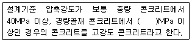
- 27
- 30
- 33
- 35
(정답률: 88%)
53. 고강도 콘크리트의 배합에 대한 설명으로 틀린 것은?
- 단위수량은 소요의 워커빌리티를 얻을 수 있는 범위 내에서 가능한 적게 하여야 한다.
- 공기연행제를 사용하는 것을 원칙으로 한다.
- 슬럼프는 작업이 가능한 범위 내에서 되도록 적게 한다.
- 잔골재율은 소요의 워커빌리티를 얻도록 시험에 의하여 결정하여야 하며, 가능한 적게 하도록 한다.
(정답률: 71%)
54. 아래의 표에서 설명하는 콘크리트는?
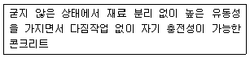
- 프리플레이스트 콘크리트
- 유동화 콘크리트
- 고유동 콘크리트
- 베이스 콘크리트
(정답률: 60%)
55. 해양 콘크리트 구조물에 쓰이는 콘크리트의 설계기준강도는 몇 MPa 이상으로 하여야 하는가?
- 21MPa
- 24MPa
- 27MPa
- 30MPa
(정답률: 69%)
56. 터널이나 큰 공동 구조물의 라이닝, 비탈면, 법면 또는 벽면의 풍화나 박리, 박락의 방지를 위하여 적용되는 것으로 뿜어 붙여서 시공하는 콘크리트는?
- 폴리머콘크리트
- 숏크리트
- 프리플레이스콘크리트
- 프리캐스트콘크리트
(정답률: 89%)
57. 강섬유보강 숏크리트에서 강섬유 혼입에 따른 가장 큰 증가 효과는 다음 중 어느 것인가?
- 휨인성
- 쪼갬강도
- 경도
- 압축강도
(정답률: 45%)
58. 경량골재 콘크리트의 시공에 대한 설명으로 틀린 것은?
- 타설할 때 모르타르가 침하하고, 굵은 골재가 위로 떠오르는 재료 분리현상이 적게 일어나도록 하여야 한다.
- 슬럼프가 작은 경우에는 강제교반기가 있는 운반차를 이용하는 것이 좋다.
- 콘크리트 펌프를 사용하여 경량골재 콘크리트를 운반하고자 할 경우 유동화 시키지 않는 것을 원칙으로 한다.
- 보통 콘크리트에 비해 진동기를 찔러 넣는 간격을 작게하거나 진동시간을 약간 길게 해 충분히 다져야 한다.
(정답률: 65%)
59. 한중 콘크리트에 대한 설명으로 틀린 것은?
- 공기연행 콘크리트를 사용하는 것을 원칙으로 한다.
- 시멘트의 온도가 낮을 경우 40°C 이하로 가열하여 사용한다.
- 타설할 때의 콘크리트 온도는 구조물의 단면치수, 기상조건 등을 고려하여 5~20°C의 범위에서 정하여야 한다.
- 단위수량은 초기 동해를 적게 하기 위하여 되도록 적게 정하여야 한다.
(정답률: 64%)
60. 콘크리트 공장제품의 특징으로 틀린 것은?
- 품질이나 작업환경이 제작시 기후상황에 영향을 많이 받는다.
- 조립구조에 주로 사용되므로 일반적으로 공기가 빠르다.
- 현장에서 거푸집이나 동바리 등의 준비가 필요 없다.
- 규격품을 제조하므로 어느 정도 작업에 대한 숙련공이 필요하다.
(정답률: 71%)
4과목: 콘크리트 구조 및 유지관리
61. 지간이 4m인 직사각형 단면의 단순보가 있다. 이 보에 자중을 포함한 고정하중 10kN/m와 활화중 20kN/m가 작용하고 있을 때 계수휨모멘트는 얼마인가?
- 30kNㆍm
- 44kNㆍm
- 60kNㆍm
- 88kNㆍm
(정답률: 33%)
62. 보의 폭 bw=250mm, 유효깊이 d=450mm, 높이 h=500mm인 직사각형 보 단면의 균열 모멘트 Mcr은? (단, fck=24MPa, 콘크리트의 파괴계수 fr=0.63√fck이고, 보통 중량 콘크리트를 사용한 경우)
- 0.016kNㆍm
- 0.032kNㆍm
- 16kNㆍm
- 32kNㆍm
(정답률: 24%)
63. 전단철근이 필요하고 비틀림을 고려하지 않아도 되는 단철근 직사각형보에서 최소 전단철근을 배치하려고 한다. 이때 전단철근의 최소 단면적은? (단, bw=350mm, d=500mm, fck=21MPa, fyt=350MPa 부재축의 직각인 스터럽간격=250mm)
- 87.5mm2
- 125mm2
- 17.5mm2
- 200mm2
(정답률: 29%)
64. 콘크리트 부재의 처짐에 관한 설명으로 틀린 것은?
- 철근콘크리트 부재의 처짐은 탄성처짐과 장기처짐으로 구분된다.
- 크리프, 건조수축 등으로 인하여 시간의 경과와 더불어 진행되는 처짐이 탄성처짐이다.
- 부철근(압박부의 압축철근 배근)을 배근하면 추가 처짐이 작아진다.
- 처짐을 계산할 때 하중의 작용에 의한 순간처짐은 부재강성에 대한 균열과 철근의 영향을 고려하여 탄성 처짐 공식을 사용하여 계산하여야 한다.
(정답률: 58%)
65. 철근의 부식이 먼저 진행하여 철근주변의 체적팽창으로 인해 콘크리트에 균열 또는 박리를 발생시키는 열화현상은?
- 탄산화
- 염해
- 알칼리 실리카 반응(ASR)
- 동해
(정답률: 36%)
66. 표면피복공법에 관한 설명으로 틀린 것은?
- 표면에 도포재를 발라 새로운 보호층을 형성 시키고, 철근 부식인자의 침입을 억제한다.
- 표면피복공법은 일반적으로 프라이머도포, 바탕조정, 바름 등의 공정으로 실시된다.
- 도포재의 도장횟수를 늘리면 표면부의 공극을 없애고, 두터운 막을 늘리면 열화요인에 대한 저항성을 강화시킬 수 있다.
- 보수 규모가 큰 경우에는 드라이팩트 콘크리트공법, 뿜어붙이기공법 등이 사용된다.
(정답률: 44%)
67. 콘크리트의 강도를 평가할 수 있는 시험 방법으로 거리가 먼 것은?
- 코아테스트
- 반발경도법
- 투수성시험
- 부착강도시험
(정답률: 75%)
68. 다음 중 내하력 평가를 위한 시험으로 적합한 것은?
- 전위차 측정시험
- 재하시험
- 압축강도 시험
- 물리탐사 시험
(정답률: 65%)
69. 인장철근 D29(공창직경은 28.6mm, 공칭단면적=642mm2)를 정착시키는데 소요되는 기본 정착 길이는? (단, fck=24MPa, fy=350MPa, 보통 중량콘크리트를 사용한 경우)
- 987mm
- 1,138mm
- 1,226mm
- 1,372mm
(정답률: 47%)
70. 재하시험에 의해 기존 구조물의 안전성 평가를 하고자 할 때 재하 하중에 대한 아래 표의 설명에서 ( )에 적합한 수치는?
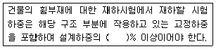
- 65
- 75
- 85
- 95
(정답률: 59%)
71. 아래의 표에서 설명하는 동해의 형태는?
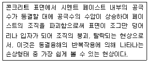
- Spalling
- Pop-out
- Scaling
- Cracking
(정답률: 62%)
72. bw=400mm, d=500mm, fck= 27MPa, fy=400MPa인 단철근 직사각형보의 압축연단에서 중립축까지의 거리(c)를 구하면?
- 240mm
- 300mm
- 333mm
- 360mm
(정답률: 58%)
73. 시멘트계 보수재료 중 공극 및 균열 충전용으로 사용할 경우 다음 중 어느 것이 가장 적절한가?
- 마이크로 실리카(실리카퓸)
- 마그네슘 인산염
- 팽창성ㆍ무수축 그라우트(팽창시멘트계)
- 초미립 시멘트
(정답률: 53%)
74. 콘크리트 보강방법의 하나인 연속섬유 시트접착공법을 적용하는 경우 얻어지는 일반적인 개선효과에 해당되지 않는 것은?
- 콘크리트 압축강도 증진효과
- 내식성 향상효과
- 균열의 구속효과
- 내하성능의 항샹효과
(정답률: 59%)
75. 프리텐션 방식의 프리스트레스트 콘크리트에 관한 일반적 설명으로 틀린 것은?
- 긴장용 강재로써 PS강선, PS강연선 등을 사용한다.
- PS강재와 콘크리트간의 부착력에 의해 콘크리트에 프리스레스가 도입된다.
- 정착장치를 이용하지 않는 경우, 부재 중앙의 콘크리트에 도입된 프리스트레스트는 부재단부의 프리스트레스에 비해 크다.
- 프리스트레스트 콘크리트의 PS강재를 곡선으로 배치하여 PSC제품을 제조하기가 용이하다.
(정답률: 52%)
76. 콘크리트 열화원인 중 환경적인 요인이 아닌 것은?
- 단면부족
- 염해
- 탄산화
- 동해
(정답률: 72%)
77. 철근의 부착강도에 영향을 미치는 요인이 아닌 것은?
- 콘크리트의 압축강도
- 철근의 간격
- 철근의 표면상태
- 철근의 강도
(정답률: 50%)
78. 그림과 같은 직사각형 보 단면이 압축부에 3-D22(As'=1,161mm2)의 철근과 인장부에 6-D32(As=4,765mm2)의 철근을 갖고 있을 때 등가 압축응력의 깊이(a)는? (단, fck=28MPa, fy=300MPa이다.)
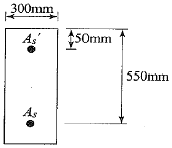
- 124.7mm
- 151.4mm
- 168.6mm
- 175.9mm
(정답률: 68%)
79. 일반적으로 정사각형 확대기초에서 전단에 대한 위험단면은?
- 기둥의 전면
- 기둥의 전면에서 d만큼 떨어진 면
- 기둥의 전면에서 d/2만큼 떨어진 면
- 기둥의 전면에서 기둥 두께만큼 안쪽으로 떨어진 면
(정답률: 57%)
80. 콘크리트 구조물이 공기 중의 탄산가스의 영향을 받아 콘크리트 중의 수산화칼슘이 서서히 탄산칼슘으로 되어 콘크리트가 알칼리성을 상실하는 현상을 무엇이라 하는가?
- 알칼리골재반응
- 염해
- 탄산화
- 화학적 침식
(정답률: 62%)